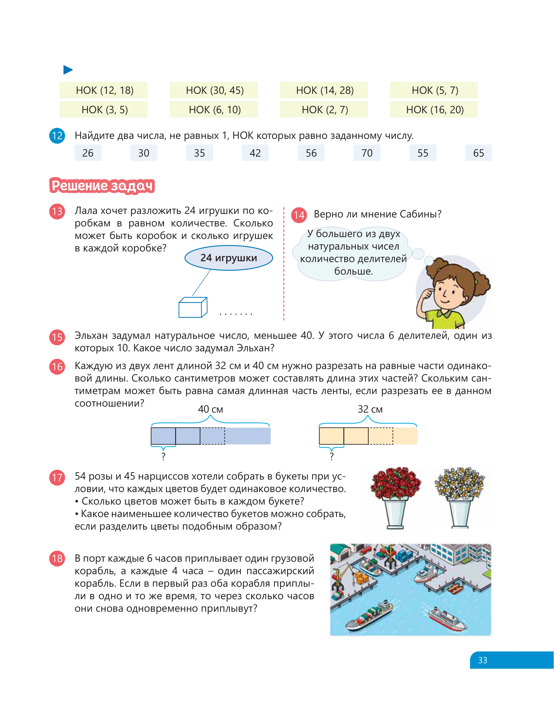
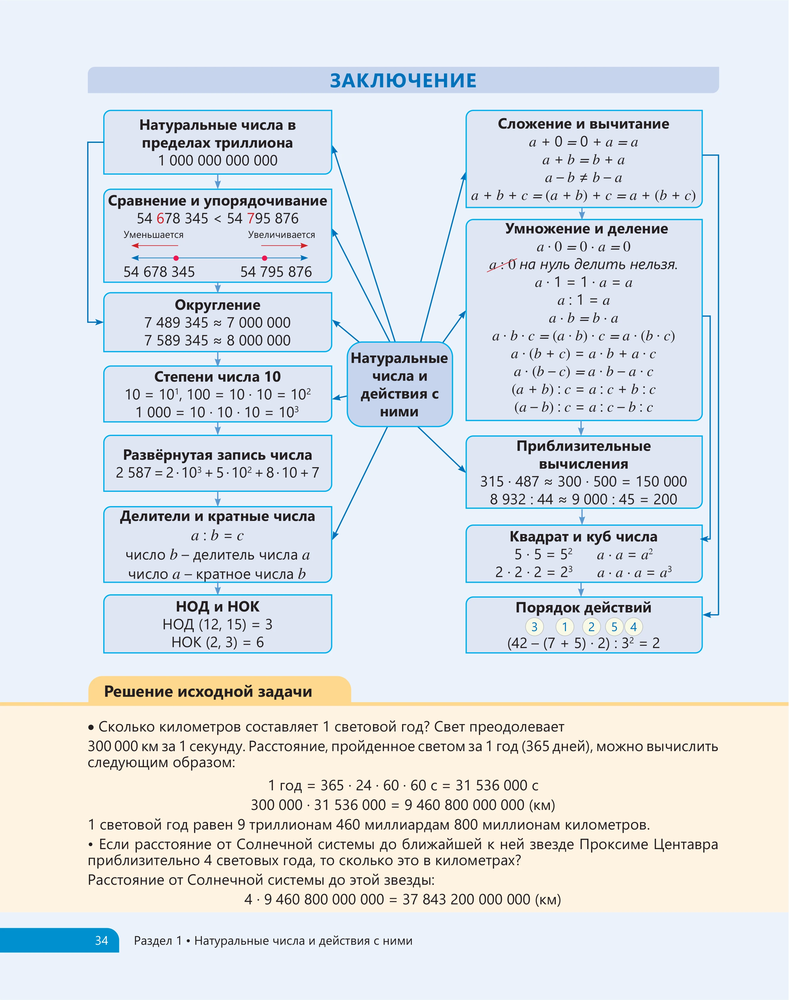
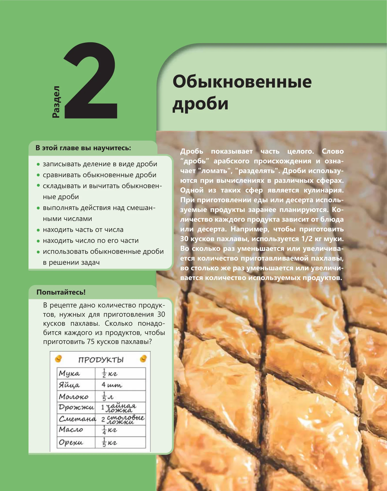

Урок 1. Понятие дроби. Числитель и знаменатель. Визуальные модели. 30 вопросов для полной проверки.
Дробь как часть целого. Числитель показывает сколько взяли, знаменатель — на сколько делили.
Круговые диаграммы, числовые прямые и прямоугольники для понимания дробей.
Как правильно записывать и читать любую обыкновенную дробь.
Рецепты, карты, время — как дроби применяются в реальных ситуациях.
Листайте слайды. Каждый слайд — ключевой блок для понимания обыкновенных дробей.



Считайте: на сколько равных частей разделили (знаменатель снизу) и сколько частей взяли (числитель сверху).
Разделите числитель на знаменатель. Частное = целая часть, остаток = новый числитель.
Целая часть × знаменатель + числитель = новый числитель. Знаменатель тот же.
Приведите к общему знаменателю (НОК) → сравните числители.
a/b от N = N × a : b. Сначала разделите N на b, потом умножьте на a.
Случайные задачи. Подсказки и счётчик серий.
20 вопросов с мгновенной обратной связью.
20 вопросов • 10 минут.